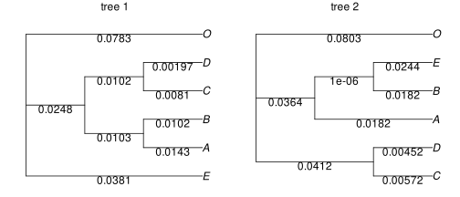
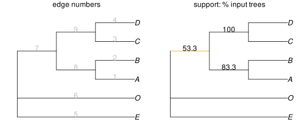

consensus phylogenies
consensus of phylogenetic trees
Given a set of input phylogenies that are all trees, we can get their greedy consensus or their majority-rule consensus with consensustree.
To give an example, we will use a set of trees from an example file that comes with the package:
julia> using PhyloNetworksjulia> inputfile = joinpath(dirname(pathof(PhyloSummaries)), "..","test","raxmltrees.tre");julia> treesample = readmultinewick(inputfile);julia> length(treesample) # 30 trees30julia> treesample[1] # first tree in the listPhyloNetworks.HybridNetwork, Rooted Network 9 edges 10 nodes: 6 tips, 0 hybrid nodes, 4 internal tree nodes. tip labels: E, A, B, C, ... (E:0.038,((A:0.014,B:0.01):0.01,(C:0.008,D:0.002):0.01):0.025,O:0.078);
To visualize trees and network, we use package PhyloPlots.
using PhyloPlots
using RCall # to tweak our plot within RR"layout"([1 2]) # figure of 2 panels
R"par"(mar=[0,0,1,0]) # for smaller margins
plot(treesample[1], showedgelength=true);
R"mtext"("tree 1") # add text annotation: title here
plot(treesample[2], showedgelength=true);
R"mtext"("tree 2")
By default, we get the greedy consensus tree of our input trees, considered as unrooted trees.
julia> con = consensustree(treesample)PhyloNetworks.HybridNetwork, Semidirected Network 9 edges 10 nodes: 6 tips, 0 hybrid nodes, 4 internal tree nodes. tip labels: A, B, C, D, ... (E,O,((A,B),(C,D)));julia> writenewick(con, support=true)"(E,O,((A,B)::0.8333333333333334,(C,D)::1.0)::0.5333333333333333);"
To plot the consensus tree showing support values, we can first extract the support values into a data frame, then use it to label edges. Below, we multiple support values by 100 to get percentages.
julia> using DataFramesjulia> esup = DataFrame( number = [e.number for e in con.edge if !isexternal(e)], support = [round(100 * e.y, digits=1) for e in con.edge if !isexternal(e)] )3×2 DataFrame Row │ number support │ Int64 Float64 ─────┼───────────────── 1 │ 7 53.3 2 │ 8 83.3 3 │ 9 100.0julia> ecol = Dict(r[:number] => (r[:support] < 70 ? "orange2" : "black") for r in eachrow(esup))Dict{Int64, String} with 3 entries: 7 => "orange2" 9 => "black" 8 => "black"
plot(con, showedgenumber=true);
R"mtext"("edge numbers", line=0)
plot(con, edgelabel=esup, edgecolor=ecol);
R"mtext"("support: % input trees", line=0)